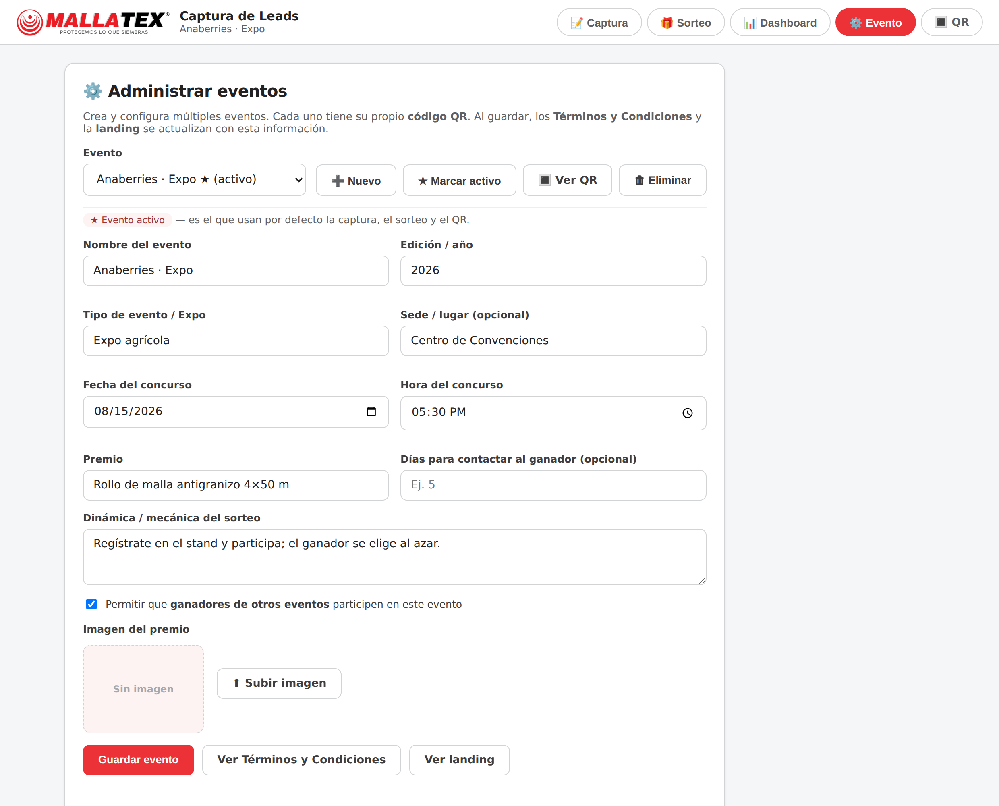
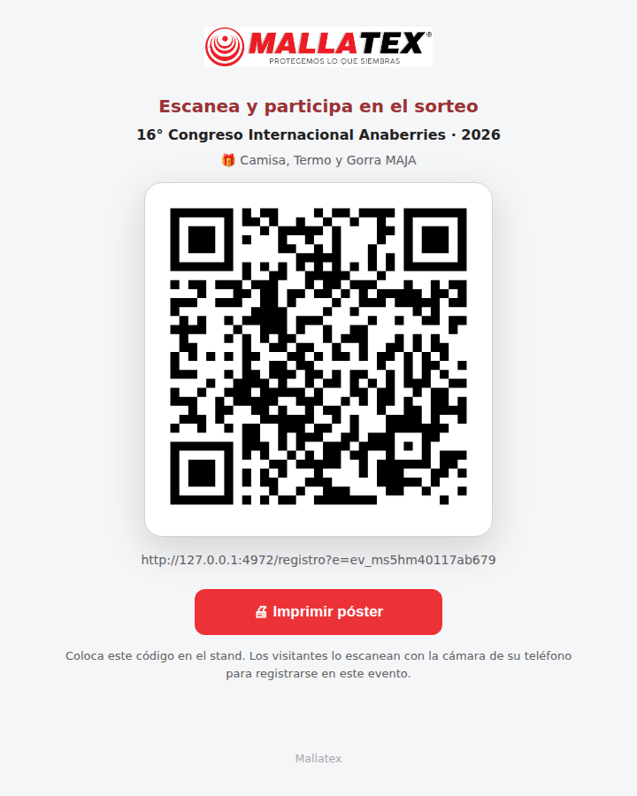

Guía estratégica para el personal de Mallatex: cómo planear, ejecutar y dar seguimiento a los sorteos del stand para maximizar leads de calidad con transparencia y cumplimiento legal.
Versión 1.0 · Julio 2026 · Uso interno
Mallatex · Protegemos lo que siembras
Contenido
1 Propósito y objetivos
El sorteo es la herramienta de atracción del stand: convierte el interés del visitante en un lead de calidad a cambio de la oportunidad de ganar un premio. Esta estrategia define cómo operarlo para que sea atractivo, justo, legal y medible.
Objetivos
Captar el mayor número de leads de calidad (con correo y celular válidos) durante el evento.
Generar valor comercial: cada registro alimenta el seguimiento de ventas de Mallatex.
Ofrecer una experiencia transparente y confiable que refuerce la marca «Protegemos lo que siembras».
Garantizar el cumplimiento del Aviso de Privacidad y la protección de datos personales.
Idea clave: el premio no es el fin, es el incentivo. El fin es un padrón de contactos reales a quienes dar seguimiento comercial.
2 Principios rectores
Principio
Qué significa en la práctica
Transparencia
La mecánica, el premio y la fecha del sorteo se publican por adelantado en la landing y en los Términos y Condiciones.
Equidad
El ganador se elige al azar entre los participantes elegibles; el sistema registra el resultado y lo conserva en el historial.
Datos de calidad
Solo participan registros con contacto válido; el correo debe ser empresarial y el celular de 10 dígitos.
Cumplimiento
Todo registro requiere aceptar Términos y Aviso de Privacidad. Los datos se usan conforme a lo informado.
Trazabilidad
Cada ganador queda con un folio único y el evento se archiva con su resultado para auditoría.
3 Ciclo de vida de un sorteo
Cada evento sigue el mismo flujo de principio a fin:
Planear — crear el evento, definir premio, mecánica, fecha/hora y plazo de contacto.
Publicar — imprimir y colocar el QR del evento en el stand.
Captar — los visitantes se autoregistran por QR; el staff registra a quien no pueda.
Sortear — en el horario anunciado, elegir el ganador al azar entre los elegibles.
Contactar — el ganador recibe su folio por correo; se le contacta dentro del plazo definido.
Cerrar — finalizar el evento; pasa al histórico con su ganador.
Regla de oro: un evento = un premio = un QR = un ganador. No mezcles registros de eventos distintos.
4 Definición del premio y la mecánica
En la pestaña ⚙️ Evento se configura todo lo que verá el visitante. Al guardar, la landing y los Términos y Condiciones se actualizan solos.
Qué definir para cada sorteo
Premio e imagen — atractivos y relacionados con el giro (p. ej. rollo de malla antigranizo).
Mecánica/dinámica — frase clara: «Regístrate y participa; el ganador se elige al azar el día/hora».
Fecha y hora del sorteo — momento en que se ejecuta ante el público.
Plazo para contactar al ganador — días hábiles para reclamar el premio (p. ej. 5 días).
Sede/lugar y edición/año del evento.
Configuración del evento: premio, imagen, fecha y mecánica.
Buena práctica: define un premio deseable pero coherente con el cliente objetivo (agricultores/empresas), para atraer leads relevantes y no “cazadores de premios”.
5 Reglas de elegibilidad y participación
Requisitos para participar
Un registro por persona — el sistema detecta duplicados por correo o celular y no los cuenta doble.
Contacto válido — celular de exactamente 10 dígitos y correo empresarial válido; por ahí se contacta al ganador.
Aceptación obligatoria de Términos y Condiciones y Aviso de Privacidad.
Opcional en el sorteo: Solo con consentimiento (participan quienes aceptaron recibir información comercial).
Por qué el correo empresarial y el celular reales importan: si el ganador no puede ser contactado, el premio no se entrega y se pierde la confianza. Verifica ambos datos en voz alta al registrar.
Quién queda fuera
Registros sin ningún medio de contacto válido.
Duplicados del mismo participante.
Según la configuración del evento, ganadores de otros eventos (ver estrategia multi-evento).
La landing muestra el premio y el aviso de contacto al ganador.
6 Estrategia multi-evento
La plataforma admite varios eventos, cada uno con su propio premio, QR y padrón de participantes. Esto permite operar expos distintas o etapas sin mezclar datos.
QR por evento
Cada evento genera su propio código en /qr?e=<id>. Imprime y coloca el QR del evento activo; los registros entran al evento correcto automáticamente.

Lista de eventos, cada uno con su configuración.

QR específico del evento para imprimir.
¿Puede un ganador de un evento participar en otro?
Al configurar el evento se decide con la opción «¿Los ganadores de otros eventos pueden participar?»:
Opción
Efecto
Cuándo usarla
Sí (permitir)
Todos participan, incluso quien ya ganó en otro evento.
Eventos independientes o públicos distintos.
No (excluir)
Quien ya ganó en otro evento no entra al sorteo.
Campañas ligadas donde se busca repartir premios entre más personas.
Define esta política antes de abrir el registro y comunícala en la mecánica para evitar confusiones.
7 Ejecución del sorteo
En la pestaña 🎁 Sorteo se ejecuta ante el público en el horario anunciado.
Selecciona el evento activo del que se sortea.
Confirma el premio y las opciones (Solo con consentimiento, Evitar ganadores repetidos).
Verifica el número de participantes elegibles a la vista de todos.
Presiona Iniciar sorteo; tras la animación se anuncia el ganador.
Anuncia el nombre en voz alta y toma nota; el resultado queda guardado.
Selección de evento y configuración del sorteo.Ganador anunciado y registrado.
El sorteo es aleatorio entre los elegibles. Hazlo en público y en el horario prometido: es el momento de mayor visibilidad de la marca.
8 Contacto al ganador y folio
Al elegir al ganador, el sistema genera un folio único (formato ANB-XXXXXX) y, si el correo está configurado, envía un correo de notificación con ese folio. El ganador presenta el folio para reclamar el premio.
Flujo de contacto
El ganador recibe el correo con su folio, el premio y el nombre del evento.
El staff contacta al ganador por correo o celular dentro del plazo definido en el evento.
Al entregar el premio, se verifica el folio contra el historial de ganadores.
Ganador con su folio; el correo de aviso se envía automáticamente.
Si el correo automático no está configurado o falla, entrega el folio manualmente y déjalo registrado. El folio también aparece en la app junto al ganador.
Si un sorteo debe repetirse (ganador ausente o no localizable en el plazo), puedes anular el resultado desde la lista de ganadores y volver a sortear.
9 Cierre del evento e histórico
Cuando el evento termina, márcalo como finalizado. Pasa al histórico, donde se conserva el detalle del evento y su ganador para consulta y auditoría.
El evento finalizado deja de recibir registros y ya no aparece como activo para sortear.
El histórico muestra, por evento: premio, fecha y ganador con su folio.
Antes de cerrar: exporta el CSV de leads desde el Dashboard para el seguimiento comercial.
Histórico de eventos finalizados con su ganador.
10 Indicadores de éxito (KPIs)
Mide cada evento desde el 📊 Dashboard para saber si la estrategia funcionó y mejorar el siguiente.
Indicador
Qué evalúa
Meta sugerida
Leads totales
Volumen de registros del evento.
Según aforo esperado del stand.
% con contacto válido
Calidad: correo y celular utilizables.
≥ 90%
Tasa de consentimiento
Registros que aceptan seguimiento comercial.
≥ 70%
Leads por captador
Desempeño del staff en el respaldo manual.
Comparativo interno.
Autoregistro vs. staff
Qué tanto se usó el QR frente al registro asistido.
Mayoría por QR.
Dashboard: indicadores, gráficas y tabla de leads.
11 Cumplimiento legal y datos personales
Todo participante acepta los Términos y el Aviso de Privacidad de Mallatex antes de registrarse.
Los datos se tratan conforme a lo informado (incluye fines de marketing, promociones y ofertas según el Aviso).
Los titulares pueden ejercer sus derechos ARCO en info@mallatex.com.mx.
Resguarda la información: no compartas el padrón de leads fuera de los canales autorizados de Mallatex.
Publica la mecánica y el plazo de contacto; cúmplelos para evitar reclamaciones.
El acceso a Sorteo, Dashboard y administración requiere inicio de sesión; solo la captura/registro público queda abierta. Cuida las credenciales del staff.
12 Roles del staff
Rol
Responsabilidad en el sorteo
Responsable del stand
Configura el evento, decide la política de ganadores, ejecuta el sorteo y valida la entrega del premio.
Personal de captura
Invita a escanear el QR, registra a quien no pueda y verifica correo y celular de cada lead.
Administrador del sistema
Gestiona usuarios y accesos; resguarda la información y exporta los datos al cierre.
Ten siempre un dispositivo del staff listo con la app abierta para registrar a quien no pueda escanear el QR.
13 Contingencias
Situación
Qué hacer
El ganador no está presente
Anúncialo, contáctalo por correo/celular dentro del plazo; si no responde, anula y vuelve a sortear.
El correo del ganador rebota
Contáctalo por celular y entrega el folio manualmente; corrige el dato en el registro.
Falla internet en el stand
El registro por gafete (OCR) funciona sin conexión; el sorteo y el guardado requieren conexión al servidor.
Pocos participantes elegibles
Impulsa el QR, registra manualmente y confirma que los contactos sean válidos antes de sortear.
Duda sobre un duplicado
El sistema avisa; conserva un solo registro por persona para no sesgar el sorteo.
14 Checklist por evento
Antes de abrir
Evento creado: premio, imagen, fecha/hora, plazo de contacto.
Política de ganadores previos definida.
QR del evento impreso y colocado.
Correo de notificación configurado y probado.
Mecánica y Aviso de Privacidad publicados.
Durante el evento
Invitar a escanear el QR.
Registrar a quien no pueda y verificar contacto.
Vigilar participantes elegibles y KPIs en el Dashboard.
En el sorteo
Seleccionar el evento activo.
Ejecutar en público, en el horario anunciado.
Anunciar al ganador y confirmar el envío del folio.
Al cierre
Contactar al ganador dentro del plazo.
Exportar el CSV de leads.
Finalizar el evento (pasa al histórico).
Mallatex · Evento Anaberries — Estrategia de Sorteos · Protegemos lo que siembras